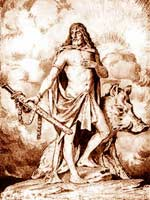

Фрейр ( "пан"), у скандинавській міфології бог родючості, що забезпечував сонячне світло, дощ, рясні врожаї і світ, син бога моря і вітру Ньерда і брат-близнюк богині родючості, любові і краси Фрей. Фрейр разом з Одіном і Тором стояли на чолі патріархальної громади богів, оскільки після примирення ванів з асами, молодим поколінням богів, вани Фрейр, Ньерд і Фрейя в якості заручників світу переселилися в Асгард. Фрейр був власником чудесного вепра ґуллінбурсті ( "золота щетина") і чудесного корабля Скідбладнір ( "зроблений з дощечок"), що вміщує будь-яку кількість воїнів.
Міф про Фрейре заснований на історії його одруження на Герді, дочки морського велетня Гюміра. Фрейр, ласкавий бог літа, видали побачивши променисту велетку Герду полюбив її з першого погляду і, не знаючи, як домогтися розташування дівчини, захворів. Ньерд, дізнавшись про серцевих стражданнях юнаки, відправив вірного слугу Скірніра ("сяючого") в Йотунгейм, країну велетнів, пообіцявши йому чарівного коня і меч. В дар нареченій Скірнір віз молодильні яблука, множити багатство кільце Драупнір і блискучий портрет Фрейра на розі, наповненому медом.
Йому було велено без Герди в Асгард не повертатися. Добравшись до палаців Гюміра, Скірнір намагався умовити Герду відповісти на любов Фрейра в обмін на одинадцять яблук вічної молодості. Коли дівчина відкинула подарунок і не спокусилася чарівним кільцем Одіна, Скірнір пообіцяв відрубати їй голову, але загроза не подіяла на Герду.
Тоді посланець пообіцяв накласти на неї закляття каліцтва і вічного вигнання, і це вирішило справу. Герда погодилася зустрітися з Фрейром через дев'ять днів. Опинившись поряд з палаючим пристрастю богом, крижане серце неприступної красуні Герди розтануло. Фрейр знайшов своє щастя, правда, це коштувало йому коня і меча, подарованих Скірніру, хоча чарівний меч, символ сонячного променя, здатний самостійно рубати голови велетням, міг би послужити йому добру службу в день останньої битви богів Рагнарек.